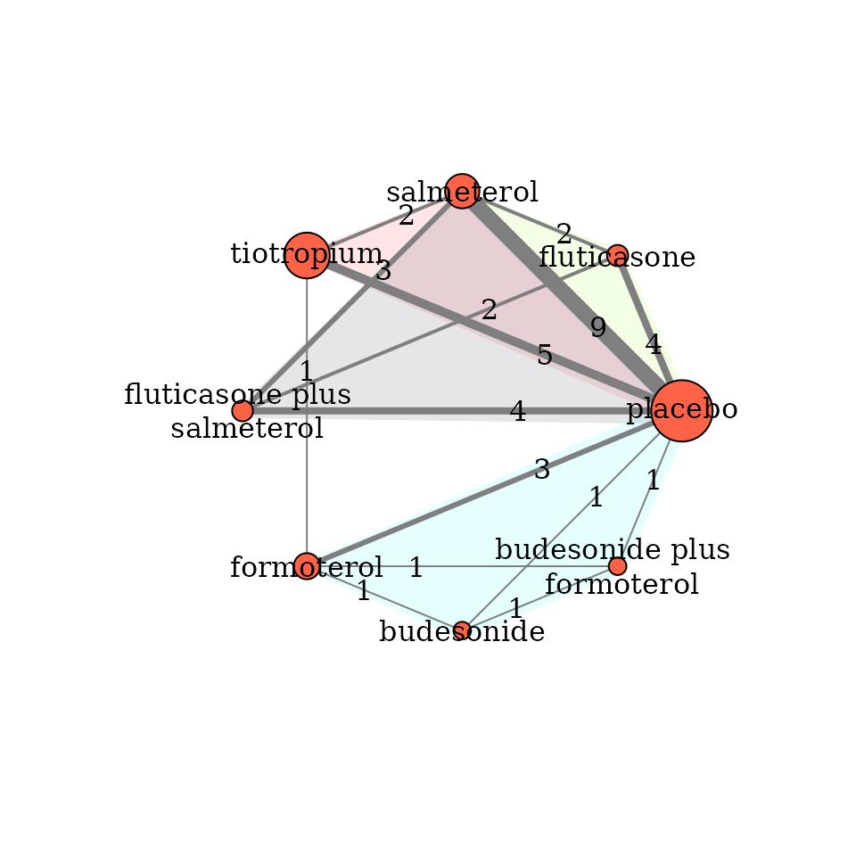

Perform network meta-analysis
Loukia M. Spineli
Latest version: 2024-10-13
Source:vignettes/perform_network_metaanalysis.Rmd
perform_network_metaanalysis.RmdIntroduction
This vignette illustrates how to perform a one-stage Bayesian
random-effects network meta-analysis with consistency equation using the
run_model function. This function includes arguments to
handle aggregate missing participant outcome data (MOD) in each arm of
every trial via the pattern-mixture model.
Example on a binary outcome
We will use the network on pharmacologic interventions for chronic
obstructive pulmonary disease (COPD) from the systematic review of Baker et
al. (2009). This network comprises 21 trials comparing seven
pharmacological interventions with each other and placebo. The
exacerbation of COPD (harmful outcome) is the analysed binary outcome
(see ?nma.baker2009).

Perform Bayesian random-effects network meta-analysis
Run the model
run_model calls the jags function from the
R2jags
package to perform the Bayesian analysis using the BUGS code of Dias and
colleagues (2013).
run_model(data = nma.baker2009,
measure = "OR",
heter_prior = list("halfnormal", 0, 1),
D = 0,
n_chains = 3,
n_iter = 10000,
n_burnin = 1000,
n_thin = 1)With only the minimum required arguments, the function adjusts MOD
under the missing-at-random assumption (MAR; by default) via the
informative missingness odds ratio (IMOR) in the logarithmic scale
(White et al. (2008)): The minimum required arguments of
run_model include specifying:
- the dataset (a data-frame with one-trial-per-row format) in
data(see?data_preparation); - the effect measure in
measure(see ‘Arguments’ in?run_model): - the prior distribution for the heterogeneity parameter in
heter_prior(see?heterogeneity_param_prior); - the direction of the outcome in
D(here,D = 0because the outcome is harmful; see, ‘Arguments’ in?run_model) - the number of chains in
n_chains(see ‘Arguments’ in?run_model– also for the subsequent arguments); - the number of iterations in
n_iter; - the number of burn-in in
n_burnin, and - the thinning in
n_thin.
Using all arguments
Suppose we decide to use an empirically-based prior distribution
for the between-trial variance that aligns with the outcome and
interventions under investigation. We also consider a hierarchical
structure for the prior normal distribution of the log IMOR that is
specific to the interventions in the network
(assumption = "HIE-ARM") (Turner et al., 2015a; Spineli,
2019). We still assume MAR on average with variance of log IMOR equal to
1 (var_misspar = 1) which is also the default argument. In
this case, run_model must be specified as follows:
run_model(data = nma.baker2009,
measure = "OR",
model = "RE",
assumption = "HIE-ARM",
heter_prior = list("lognormal", -2.06, 0.438),
mean_misspar = c(0, 0),
var_misspar = 1,
D = 0,
n_chains = 3,
n_iter = 10000,
n_burnin = 1000,
n_thin = 1)The argument model = "RE" refers to the random-effects
model. For the fixed-effect model, use model = "FE".
heter_prior = list("lognormal", -2.06, 0.438) refers to
‘symptoms reflecting the continuation of condition’ for the
‘pharmacological versus placebo’ comparison-type as elicited by Turner
and colleagues (2015b).
In the argument mean_misspar = c(0, 0), the first and
second element of the vector refers to the mean log IMOR in the
non-reference interventions and the reference intervention of the
network, respectively – the latter is always the intervention with
identifier equal to 1. Hence, for all non-reference interventions we can
consider the same mean log IMOR. See ‘Details’ in
?missingness_param_prior
The output
run_model returns a list of R2jags
output on the summaries of the posterior distribution, and the
Gelman-Rubin convergence diagnostic of the monitored parameters (see
‘Value’ in ?run_model). The output is used as an S3 object
by other functions of the package to be processed further and provide an
end-user-ready output. See, for example, the function
?league_heatmap that creates the league table with the
effect sizes of all possible comparisons in the network.
No or partially extracted missing participant outcome data
run_model can also handle a dataset where MOD have not
be extracted or MOD have been extracted for some trials or trial-arms.
For illustrative purposes, we removed the item m from
nma.baker2009 to indicate that MOD were not extracted for
this outcome:
study t1 t2 t3 t4 r1 r2 r3 r4 n1 n2 n3 n4
1 Llewellyn-Jones, 1996 1 4 NA NA 3 0 NA NA 8 8 NA NA
2 Paggiaro, 1998 1 4 NA NA 51 45 NA NA 139 142 NA NA
3 Mahler, 1999 1 7 NA NA 47 28 NA NA 143 135 NA NA
4 Casaburi, 2000 1 8 NA NA 41 45 NA NA 191 279 NA NA
5 van Noord, 2000 1 7 NA NA 18 11 NA NA 50 47 NA NA
6 Rennard, 2001 1 7 NA NA 41 38 NA NA 135 132 NA NAUsing the minimum required arguments, run_model will run
and provide results.
run_model calls the data_preparation
function. The latter creates a pseudo-data-frame for the item
m (see ‘Value’ in ?data_preparation) that
assigns NA to all trial-arms. data_preparation
also creates the pseudo-data-frame I that has the same
dimension with the other items in the dataset, and assigns the zero
value to all trial-arms to indicate that no MOD have been extracted.
Both pseudo-data-frames aim to retain in the dataset the trials without
information on MOD; otherwise, these trials would have been excluded
from the analysis. See ‘Details’ in ?data_preparation and
?run_model.
References
Dias S, Sutton AJ, Ades AE, Welton NJ. Evidence synthesis for decision making 2: a generalized linear modeling framework for pairwise and network meta-analysis of randomized controlled trials. Med Decis Making 2013;33(5):607–617. doi: 10.1177/0272989X12458724
White IR, Higgins JP, Wood AM. Allowing for uncertainty due to missing data in meta-analysis–part 1: two-stage methods. Stat Med 2008;27(5):711–27. doi: 10.1002/sim.3008
Turner NL, Dias S, Ades AE, Welton NJ. A Bayesian framework to account for uncertainty due to missing binary outcome data in pairwise meta-analysis. Stat Med 2015a;34(12):2062–80. doi: 10.1002/sim.6475
Spineli LM. An empirical comparison of Bayesian modelling strategies for missing binary outcome data in network meta- analysis. BMC Med Res Methodol 2019;19(1):86. doi: 10.1186/s12874-019-0731-y
Turner RM, Jackson D, Wei Y, Thompson SG, Higgins JPT. Predictive distributions for between-study heterogeneity and simple methods for their application in Bayesian meta-analysis. Stat Med 2015b;34(6):984–98. doi: 10.1002/sim.6381